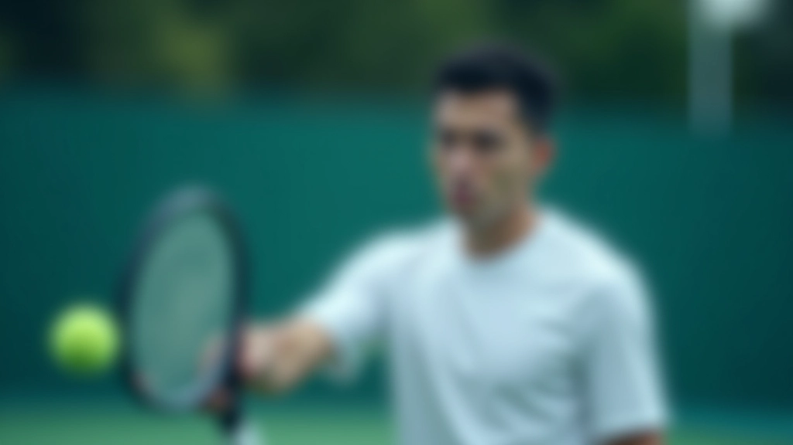
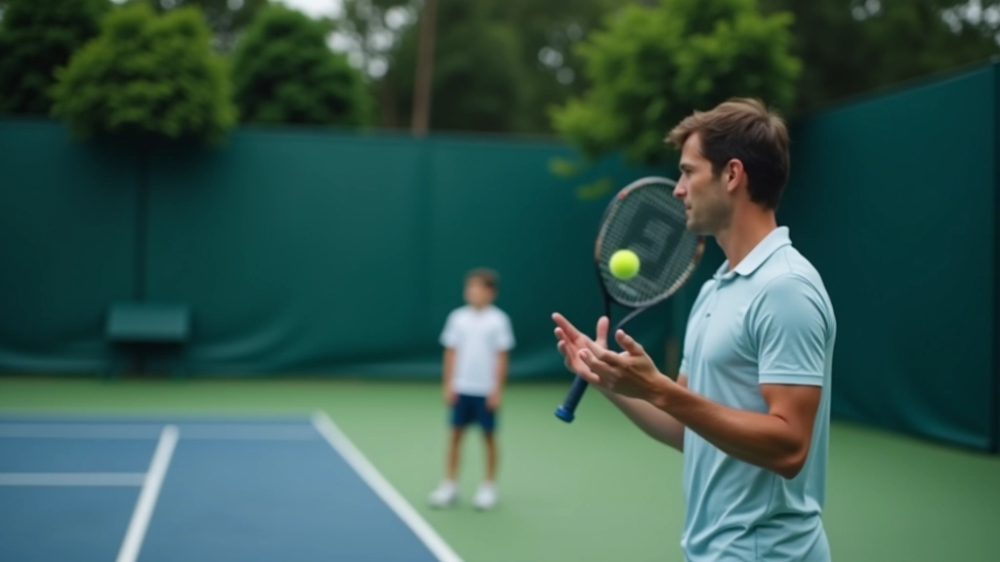
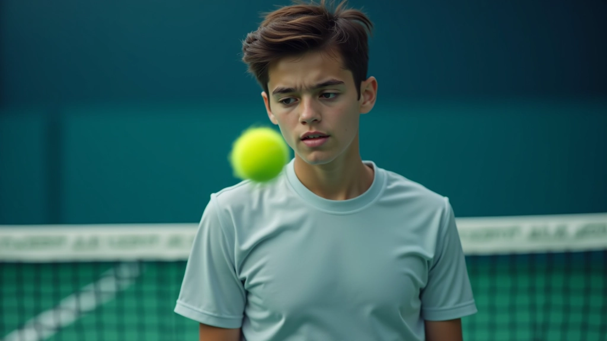
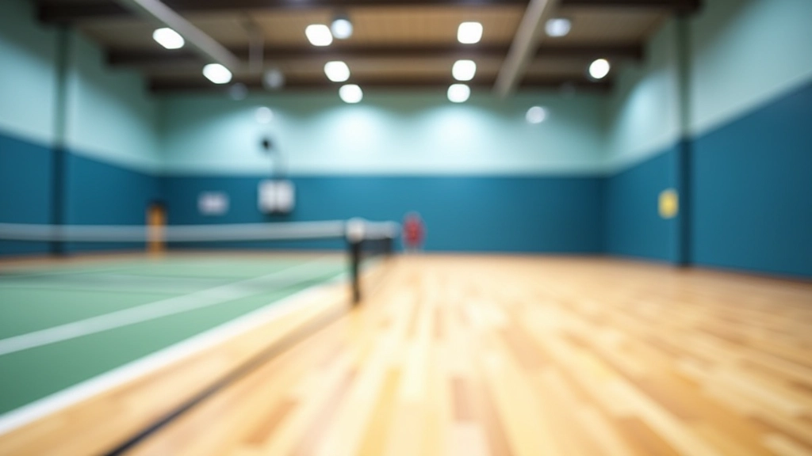

إتقان الضربة الطائرة: التقنية الأساسية والخطوات العملية
شرح مفصل لكيفية تطوير الضربة الطائرة من الصفر — بدءًا من موضع القدمين وحتى المتابعة الصحيحة.
مجموعة من التمارين العملية التي تقوي دقة ضربتك الطائرة وسرعة استجابتك عند الشبكة

الضربة الطائرة ليست مجرد ضربة عادية — هي الفرق بين لاعب متوسط وآخر يحقق انتصارات حقيقية. عندما تقترب من الشبكة وتتحكم بالنقطة مباشرة، أنت تتحكم بإيقاع المباراة. لكن هذا يتطلب تركيزًا حادًا وحركات سريعة ودقة عالية.
التمارين التي ستتعلمها هنا تركز على بناء ثقتك عند الشبكة. من خلال التكرار المنظم والتركيز على التفاصيل الصغيرة، ستلاحظ تحسنًا ملموسًا في دقة ضربتك واستجابتك السريعة خلال 4-6 أسابيع من التدريب المنتظم.
تعلم كيفية توجيه الكرة بدقة من المركز الأول
تحسين وقت ردك والاستجابة السريعة للكرات الصعبة
بناء الثقة النفسية والتركيز في اللحظات الحرجة
هذا التمرين يركز على التحكم الأساسي بالكرة عند الشبكة. أنت بحاجة إلى السيطرة على ارتفاع ضربتك واتجاهها بدقة عالية. الفكرة بسيطة لكنها قوية: لا تستطيع الفوز بنقاط متسقة إذا كنت تضرب الكرات عشوائيًا.
ابدأ بالوقوف على بُعد متر واحد من الشبكة. دع شريكك يرمي لك الكرات بسرعة معتدلة. ركز على ثلاثة أشياء فقط: موضع القدمين (ثابت)، حركة الرسغ (مرنة)، واتجاه النظر (على الكرة). أنجز 30 ضربة صحيحة في كل جلسة تدريبية. ستلاحظ الفرق بعد أسبوعين.
قف بثبات على بعد 1 متر من الشبكة
اطلب من الشريك رمي كرات بسرعة متوسطة
ركز على دقة التوجيه والارتفاع
أكمل 30 ضربة صحيحة متتالية


السرعة تحسم الكثير من النقاط عند الشبكة. لكن هنا نتحدث عن سرعة الحركة الذكية وليس الجري العشوائي. يجب أن تتحرك نحو الكرة بخطوات صغيرة وسريعة، وليس بخطوة واحدة كبيرة.
هذا التمرين يحسّن ردات فعلك الحركية. اطلب من شريكك أن يرمي لك الكرات من زوايا مختلفة — يمينًا ويسارًا وفي المركز. كل مرة، حرّك قدميك أولاً قبل تحريك الذراع. 40 ضربة في الجلسة الواحدة كافية. الهدف هو الحركة الصحيحة، لا العدد الكبير.
خطوات صغيرة وسريعة نحو الكرة
ابقَ على كرات الأصابع (لا تكن ثابتًا بقدميك)
الذراع ترافق الحركة، لا تقودها
هذه التمارين مصممة للأغراض التعليمية وتستند إلى ممارسات شائعة في التدريب. كل لاعب مختلف، والنتائج تعتمد على مستواك الحالي وانتظامك في التدريب. إذا كنت مبتدئًا تمامًا، من الأفضل العمل مع مدرب متخصص لضمان الحركات الصحيحة. لا تتردد في تكييف هذه التمارين حسب احتياجاتك الشخصية.
كم مرة فقدت نقطة مهمة عند الشبكة بسبب نقص التركيز؟ الضغط النفسي شيء حقيقي في المباريات. هذا التمرين يساعدك على البقاء هادئًا وركز عندما تكون الأمور صعبة.
التمرين بسيط: العب تبادلاً قصيرًا مع شريكك، لكن ضع قاعدة — إذا أخطأت، تبدأ من الصفر. لا ثانية فرصة. هذا يحاكي الضغط الحقيقي للمباراة. العب 5 تبادلات صحيحة متتالية. ستجد أن تركيزك يتحسن مع الممارسة. الهدف ليس الفوز دائمًا، بل البقاء هادئًا والتركيز على الحركة الصحيحة.


التدريب ليس مجرد قضاء وقت في الملعب — هناك طريقة صحيحة للقيام به. إذا كنت تريد نتائج حقيقية، عليك التركيز على الجودة وليس الكمية.
مارس 3 مرات أسبوعيًا: التدريب المنتظم أهم من جلسة واحدة طويلة. 45 دقيقة في كل جلسة كافية إذا كانت مركزة.
سجل تقدمك: اكتب عدد الضربات الصحيحة في كل تمرين. الأرقام تحفزك وتظهر التحسن الفعلي.
استرح بذكاء: لا تتدرب عندما تكون متعبًا. الراحة جزء من التدريب.
ابحث عن شريك جيد: شريك التدريب يحدث فرقًا كبيرًا. ابحث عن شخص في مستواك أو أفضل قليلاً.
الضربة الطائرة ليست موهبة فقط — هي مهارة مكتسبة. بعد أسابيع قليلة من التدريب المنتظم باستخدام هذه التمارين، ستشعر بثقة أكبر عند الشبكة. قد تبدو بسيطة، لكن هذه التمارين الثلاثة تغطي كل ما تحتاجه: الدقة، والسرعة، والتركيز النفسي.
المفتاح هو الانتظام والصبر. لن ترى النتائج بين عشية وضحاها، لكن بعد 6-8 أسابيع من التدريب المركز، ستكون لاعبًا مختلفًا عند الشبكة. ابدأ اليوم، وركز على الحركات الصحيحة. النتائج ستأتي بعد ذلك.
تصفح مقالاتنا الأخرى لفهم أعمق لتقنيات الضربة الطائرة والاقتراب من الشبكة
استكشف المزيد
فريق المراجعة والتحرير
كتبه فريق شبكة الضربة الطائرة التحريري، المركز على تقديم إرشادات عملية وسهلة المتابعة.
شرح مفصل لكيفية تطوير الضربة الطائرة من الصفر — بدءًا من موضع القدمين وحتى المتابعة الصحيحة.

تعلم كيفية الاقتراب الآمن والفعال من الشبكة مع الحفاظ على توازنك وجاهزيتك للرد.

فهم كيفية دمج الضربة الطائرة والاقتراب من الشبكة كجزء من استراتيجية هجومية متكاملة.